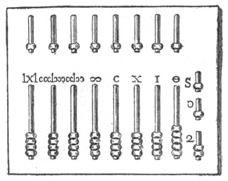
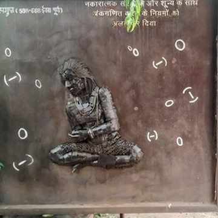
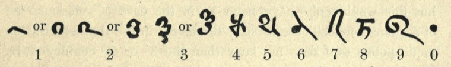
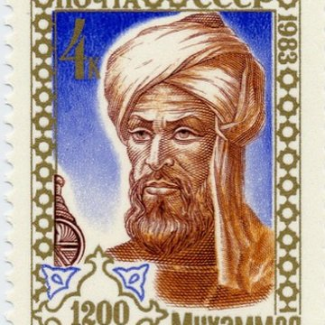
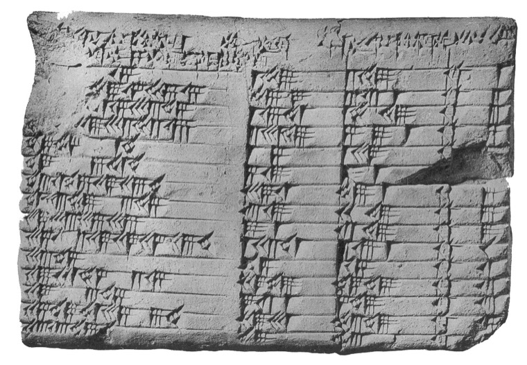

Appendix I · 数の風景
ローマ数字で 38 × 17 を計算してみる。そこに現れる十二の手順が、「位取り」という記法がどれほど革命的だったかを教えてくれる。
ブラーマグプタが『ブラーマ・スプタ・シッダーンタ』でゼロを数として初めて定義。位取り記数法が理論的に完成。
同じ年、ビザンツ帝国のヘラクレイオスがサーサーン朝との26年戦争を終結させ聖十字架を奪還。日本では推古天皇が崩御した。
指10本で生まれた10進法に、インドの数学者たちがもう一つ別の革命を重ねた。それが「位置で値を変える」という発想である。
スマホの電卓を取り出して 38 × 17 と打ち込む。指が画面に触れた瞬間、646 という答えがそこにある。
私たちは数を書くという行為を、生まれた時から「位取り」として知っている。1の位、10の位、100の位。これが数の書き方だと信じている。
しかしおよそ1400年前、人類の大半はこの書き方を知らなかった。そして知ってからヨーロッパに行き渡るまで、およそ千年かかった。
この記事では、ローマ数字とアラビア数字で同じ計算を並走させることで、「位取り」という記法そのものがなぜ革命だったかを体感できる。
XXXVIII × XVII。これが 38 × 17 のローマ数字表記である。ラテン世界ラテン世界古代ローマ帝国の言語(ラテン語)と文化の影響圏。およそ西ヨーロッパ全域を指し、ローマ滅亡後も中世カトリック教会と修道院を通じてラテン語が使われ続けた。では15世紀まで、この形で数を書いていた。紀元前の共和政期共和政期(きょうわせいき)紀元前509年〜紀元前27年のローマの政治体制。元老院と執政官による統治で、皇帝はまだ存在しなかった時代。から、帝政ローマ帝政ローマ紀元前27年〜のローマ帝国時代。アウグストゥス以降、皇帝による統治が続き、最盛期にはヨーロッパ・北アフリカ・西アジアに広大な版図を持った。を経て、中世ヨーロッパ中世ヨーロッパ西ローマ帝国滅亡(476年)から15世紀末頃までのおよそ1000年間。教会・封建領主・都市国家が並立し、学問は修道院と少数の大学に集中していた。の修道院修道院(しゅうどういん)キリスト教の修道士・修道女が共同で祈り・労働・学問を行う宗教施設。中世ヨーロッパでは写本の作成と記録の保管が行われ、知の集積地でもあった。の帳簿まで、千数百年のあいだ「数を書く」とはこういうことだった。
問題は、この記法では紙の上で直接掛け算ができないということである。X は X のまま、V は V のまま。桁(けた)という概念がない。だからローマ人は、計算そのものを紙から切り離し、アバカスアバカス（計算盤）珠(たま)や小石を溝やワイヤー上で動かして計算する道具。ローマのアバカスは青銅製の板に溝が刻まれ、珠を指で滑らせて足し算・引き算・掛け算を行った。紙の記法が位取りを持たないかわり、道具の側に位取りを埋め込んだ形だった。という計算盤の上で行った。紙は結果を記録するだけの場所だった。

ローマのアバカスの図解。上下に分かれた溝に珠(たま)が並び、各列が「一」「十」「百」…の位を担う。位取りを道具の側に物理的に埋め込んだ装置である。
Encyclopædia Britannica, 11th edition, 1911 / Public Domain
一方、7世紀のインドでは、紙の上にだけ書かれた記号で直接計算ができる新しい記法が完成しつつあった。0 から 9 までの十個の記号と、ゼロという「空位の目印」。そして何より、同じ記号でも置かれた位置によって値が変わるという大胆な発想。これが位取り記数法である。その理論的完成を告げたのが、628年にブラーマグプタブラーマグプタ(c.598–668)インドのウッジャイン(現インド中部)で活躍した数学者・天文学者。ゼロを「数」として初めて体系的に定義した人物。著書『ブラーマ・スプタ・シッダーンタ』(628年)で位取り記数法の理論的完成を告げた。が書いた『ブラーマ・スプタ・シッダーンタBrāhma-sphuṭa-siddhānta「ブラフマー(ヒンドゥー教の創造神)によって正確に確立された教義」の意。全24章、1008の詩節からなる数理天文学の大著。第18章が数論で、ここでゼロと負数の演算規則が初めて体系的に記された。』という一冊の本だった。

ブラーマグプタ
Brahmagupta, c.598–668
インドのウッジャインで活躍した天文学者・数学者。628年、30歳のときに『ブラーマ・スプタ・シッダーンタBrāhma-sphuṭa-siddhānta「ブラフマーによって正確に確立された教義」の意。全24章、1008偈からなる数理天文学の大著。第18章が数論で、ここでゼロと負数の演算規則が初めて体系的に記された。』を著し、ゼロを数として初めて数学的に定義。「数にゼロを足しても引いても変わらない」「ゼロにゼロを足してもゼロ」という当たり前の規則こそが、位取り記数法を完成させた鍵だった。
Photo: Pur 0 0 / CC0 (Shaheedi Park, Delhi, 2024)
"The sum of zero and a negative number is negative; the sum of zero and a positive number is positive; the sum of zero and zero is zero."
ゼロと負の数の和は負の数である。ゼロと正の数の和は正の数である。ゼロとゼロの和はゼロである。
— Brahmagupta, Brāhma-sphuṭa-siddhānta, Chapter 18 (628 CE)

バフシャーリー写本（3〜7世紀、インド北西部）に記された数字。点（・）が「空位の目印」としてのゼロ記号。現在知られる最古のゼロ記号の一つである。
Image: A. F. R. Hoernle, On The Bakhshali Manuscript, 1887 / Public Domain
ブラーマグプタの書は、8世紀にアラビア語へ訳され、アル・フワーリズミーal-Khwārizmī（c.780–850）バグダードの「知恵の館」に仕えたペルシア系の数学者・天文学者・地理学者。825年頃『インド数の計算について』を執筆し、インドの位取り記数法をアラビア世界に広めた。彼の名前のラテン化 Algoritmi が「アルゴリズム」の語源になった。がバグダードでさらに普及版を書いた。この記法はイスラム世界を通って800年近く旅をし、ようやく13世紀にヨーロッパへ到達する。運び手はイタリア商人の息子、レオナルド・フィボナッチだった。

アル・フワーリズミー
Muḥammad ibn Mūsā al-Khwārizmī, c.780–850
バグダードの「知恵の館」で活躍したペルシア系の数学者・天文学者・地理学者。825年頃『インド数の計算について』を執筆し、インドの0〜9の記号と位取りをアラビア世界へ広めた。彼の名前のラテン読み Algoritmi が「アルゴリズム」の語源となり、別書 al-jabr は「代数(algebra)」の語源となった。
Image: 1983年ソ連記念切手(生誕1200年) / PD-RU-exempt
レオナルド・フィボナッチ(ピサのレオナルド)
Leonardo Fibonacci, c.1170–c.1250
ピサ出身のイタリア人商人・数学者。父親の仕事の関係で北アフリカのベジャーヤベジャーヤ(Béjaïa)現在のアルジェリア北部の港町。中世はイスラム王朝の交易拠点として栄え、ピサなどイタリア商人の商館もあった。フィボナッチはここでアラビア商人の計算法を学んだ。で育ち、アラビア商人の計算法を習得。1202年『算盤の書Liber Abaci(リベル・アバキ)1202年刊。「アバカス(算盤)の書」の意だが、内容は逆説的に「アバカスを捨てよ」の本だった。商人の日常の計算例を通してインド・アラビア数字の優位を説き、西欧の商業革命を駆動した。(Liber Abaci)』をピサで発表し、インド・アラビア数字をヨーロッパに本格紹介した。
"The nine Indian figures are: 9 8 7 6 5 4 3 2 1. With these nine figures, and with the sign 0, which the Arabs call zephir, any number whatsoever can be written."
インドの九つの数字は、9 8 7 6 5 4 3 2 1。この九つの数字に、アラブ人が zephir と呼ぶ 0 という記号を加えれば、いかなる数も書き表せる。
— Leonardo Fibonacci, Liber Abaci, Prologue (1202)
✗ 誤解
ローマ数字も位取り記数法の一種である。ただ記号が違うだけ。
✓ 実際は
ローマ数字は加算型で、位取りではない。I は常に 1、X は常に 10。「位置」に意味がなく、記号を足し合わせるだけ。だから紙の上で掛け算ができない。
✗ 誤解
「アラビア数字」だからアラブが発明した。
✓ 実際は
発明はインド（5〜7世紀）。アラブはインドから受け継いでヨーロッパに橋渡しをした中継者である。アラブ自身は今も「インド数字（アラカーム・ヒンディー）」と呼ぶ。
✗ 誤解
位取りとは10進法のこと。
✓ 実際は
位取りは原理で、10は選ばれた基数の一つ。バビロニアは60進、マヤは20進、現代のコンピュータは2進。どれも「位置が値を決める」という共通の骨格を持つ。
= 100 + 100 + 100 + 50 + 10 + 5 + 1 + 1
= 367
同じ「3」でも、置かれた位置によって 3 / 30 / 300 と値が変わる。
ローマ数字(加算型)は記号を足し合わせるだけ。位取り型は同じ記号でも位置によって掛かる係数が変わる。これが記法の根本的な違いである。
同じ計算を、三つの記法で同時に走らせてみる。左がローマ数字、中央が現代のアラビア数字、右がバビロニアの60進法。「次の手順へ」ボタンで三者同時に一手ずつ進む。どの記法で何手かかったか——数字の持つ「革命性」は、この手数の差に凝縮されている。
加算型・アバカス前提
10進位取り・紙の上で完結
60進位取り・乗算表前提
アラビア数字では 4 手、しかもすべて紙の上で完結する。ローマ数字では 12 手、そのうちの大半は紙ではなくアバカスの珠(たま)を動かす物理操作である。バビロニアは乗算表(掛け算の早見表)を前提にすることで表面上 3 手で済むが、そのために60進の巨大な乗算表(数千通りの組合せ)を覚えておく必要があった。
数字を「書く」だけで計算ができる。これは当たり前に見えて、人類史のなかで長らく当たり前ではなかった。紙の上の記号が、それまで道具が担っていた仕事を引き受けてくれる——これが位取り記数法の革命である。
※ 古代エジプトの数字記号(ヒエログリフ)はフォント未対応の環境が多いため、ここでは加算型記法の冗長さを示す中立的な代替記号で表示しています。
数を上げていけば上げていくほど、加算型は「記号の列」が線形に長くなる。一方、位取り型は桁だけが伸びていき、大きな数もコンパクトに書ける。この「同じ情報量に必要な記号数」の差が、計算の難易度にほぼそのまま比例する。
ゼロなしで位取りは成立するか
位取り記数法は、桁を揃えるための「空位の目印」がないと曖昧になる。ゼロをどう扱うかで、三つの数がどう見えるかを切り替えてみる。
2百5
205
2千5
2005
25
25
ゼロあり: 三つの数は明確に区別される。205、2005、25 はすべて別の数として読める。
ゼロを詰めてしまえば、205 も 2005 も 25 と区別がつかなくなる。ゼロは「ない」を表す記号ではなく、「ここは空っぽの位です」を表す記号として、位取りの骨格そのものを支えている。ブラーマグプタが 628 年にこの役割を明文化するまで、位取り記数法は未完成だった。
位取り記数法は、ただの表記変更ではなかった。数を書くという行為そのものの位置づけが、四つの層で変わった。
位取り記数法の四つの革命
有限の記号で無限の数を書ける
0〜9 の十個で、兆でも京でも
ローマ数字には M（1000） までしか基本記号がない。百万を書くには線を引いたり枠で囲ったりと拡張規則が必要で、一兆ともなると実用に耐えない。位取り記数法は0〜9 の十個で止まる。桁を増やすだけで、どんな大きな数も同じ方式で書ける。
位置が「掛け算」を暗黙に運ぶ
3 は場所によって 3, 30, 300
367 という数のなかの「3」は、位置のおかげで 300 を意味する。加算型なら「3」と「100」をそれぞれ書かねばならないところを、位取りは位置情報に 100 を埋め込む。記号を節約しているというより、記号の外側にある構造（桁）に意味を移譲している。
ゼロが位取りを成立させる
「空位の目印」は骨格
205 と 25 を区別するためには、百の位が空であることを明示する記号がいる。それがゼロである。古代バビロニアは長いあいだ「空位を空白で示す」方式を試したが、文脈依存で曖昧だった。インドが発明したゼロ記号という placeholderplaceholder(プレースホルダー)「場所取り」の意。本来そこに置かれるべきものがない時に、「ここは空っぽです」という事実を示すための仮の目印。位取り記数法のゼロは、数の不在ではなく「桁の存在」を保証する役割を担う。 こそ、位取り記数法を完成形にした最後のピースだった。
計算が「書いて動かす」行為になった
筆算アルゴリズムの誕生
位取りのない世界では、計算はアバカスの珠(たま)を動かす身体操作だった。頭の中に珠の位置を保持する技能も必要だった。位取りは、そのすべてを紙の上の記号操作に移植した。掛け算・割り算の筆算アルゴリズム(計算の手順)が可能になり、道具を持たない子供でも訓練すれば計算ができるようになった。これは計算の民主化である。
この四つは独立した利点ではなく、連鎖的に絡み合って一つの革命を構成している。有限の記号と位置の意味がゼロによって結び付き、その全体が紙の上のアルゴリズムを可能にする。どれか一つでも欠ければ、この記法は成立しない。
位取り記数法は一夜にして生まれたものではない。バビロニアが位取りの骨格を試し、インドがゼロと十個の記号でそれを完成させ、アラブが伝播させ、ヨーロッパが受け入れを拒みながらおよそ千年かけて完全定着した。「革命」とは言っても、定着まではひどくゆっくりだった。

バビロニアの数学粘土板 Plimpton 322（紀元前1800年頃）。60進法の位取り表記でピタゴラス数ピタゴラス数a² + b² = c² を満たす自然数の三つ組(a, b, c)。例: (3, 4, 5)、(5, 12, 13)、(8, 15, 17)など。直角三角形の三辺の長さがすべて整数になる組合せ。の表が刻まれている。位取りの骨格はここに既にあったが、ゼロ記号の完成には2400年を要した。
Columbia University / Public Domain
前 1800 年頃
バビロニアの 60 進位取り
楔形文字楔形文字(くさびがたもじ)古代メソポタミアで使われた最古級の文字。葦(あし)のペンで粘土板に楔(くさび)状の刻印を押し付けて記述した。シュメール・バビロニア・アッシリアなどで紀元前3000年頃から紀元前後まで使われた。による60進の位取り記数法。Plimpton 322 など数理粘土板に記録。ただしゼロ記号は未成立で、空位は空白で示された（のちに点記号が使われるようになる）。
前 300 年頃
ブラーフミー数字（インド）
1〜9 に対応する 9 種の基本記号が成立（この段階ではまだゼロ記号は存在しない）。位取りの仕組みはまだなく、ただの記号の集合体だが、後の位取り記数法の材料が揃う。
3〜7 世紀
バフシャーリー写本
インド北西部（現パキスタン）で書かれた数学の写本(しゃほん、=手書きの本)。空位を示す点記号が使われており、現在知られる最古のゼロ記号の一つ。
628 年
ブラーマグプタ『ブラーマ・スプタ・シッダーンタ』
ゼロを数として初めて数学的に定義。「数 − 自分自身 = 0」「0 + n = n」という演算規則を明文化。位取り記数法が理論的に完成した年。
825 年頃
アル・フワーリズミー『インド数の計算について』
バグダードの「知恵の館」知恵の館(バイト・アル=ヒクマ)9世紀バグダードに置かれたアッバース朝の研究機関。世界中のギリシャ語・ペルシア語・サンスクリット語の文献をアラビア語に翻訳し、自然科学・数学・医学を体系化した。中世のもっとも巨大な研究所だった。で執筆。インドの位取り記数法がアラビア世界へ本格普及。彼の名前の音訳「Algoritmi」がのちに「アルゴリズムアルゴリズム(algorithm)計算や問題解決の手順を、誰がやっても同じ結果になるように決めた一連の規則。語源はアル・フワーリズミーの名前のラテン化「Algoritmi」。現代のコンピュータも本質的にアルゴリズムの集合である。」の語源になる。
1202 年
フィボナッチ『算盤の書』
北アフリカでアラビア商人の計算法を学んだピサ出身のイタリア人が、インド・アラビア数字をヨーロッパに本格紹介。ブラーマグプタから 574 年、発明地(インド北西部)から約 7000 キロの旅だった。
1299 年
フィレンツェ、アラビア数字禁止令
フィレンツェの銀行家たちはアラビア数字の使用を禁じられ、帳簿にはローマ数字を使うよう命じられた。表向きの理由は「偽造しやすいから（0 を 6 に、1 を 7 に書き換えられる）」。実際はアバカスを使う既存ギルドの既得権防衛だったとされる。
1450 年 〜
活版印刷と急速普及
グーテンベルクの活版印刷グーテンベルクの活版印刷1440年代にドイツのヨハネス・グーテンベルクが実用化した、金属の活字を組んで紙に大量印刷する技術。それまで写本は1冊ずつ手書きで作られていたが、印刷で同じ本を百冊単位で短期間に複製できるようになり、知識の普及速度が一変した。でアラビア数字の複製コストが劇的に下がり、商業と学問の両面で普及が加速。16 世紀末にはヨーロッパのほぼ全域に定着した。完全定着までブラーマグプタから約 950 年が経っていた。
作品・文化への登場
フィレンツェ銀行家の二重帳簿
1299年の禁止令以降、フィレンツェの銀行家たちは「当局用のローマ数字帳簿」と「実務用のアラビア数字帳簿」を並行して維持した。前者は形式、後者は実務。記数法そのものが規制と抜け道の対象になった、人類史でも稀な事例である。
日本の小学校算数
日本の小学校算数では、低学年の最重要目標の一つが「位取り記数法の理解」である。「10 のまとまりをつくる」「位を揃えて書く」という指導は、千年以上かけて人類が辿り着いた抽象構造を、7 歳の子供の手の中に短時間で注ぎ込む仕事をしている。
位取り記数法が革命だったのは、計算という作業を頭とアバカスから紙の上へ移したからである。ローマ人が指とアバカスでやっていた仕事の大半を、インド人は記号と位置に任せてしまった。紙と筆さえあれば誰でも掛け算ができる——これは計算の民主化であり、同時に思考の外部化でもあった。
現代のコンピュータは、位取りを二進法で徹底する装置である。0 と 1 という二つの記号を、位置ごとに 2 のべき乗(2, 4, 8, 16, 32 …)で掛けて足す。ブラーマグプタが 628 年に書いた規則は、ほぼそのままコンピュータの中で動いている。記号の数と基数基数(きすう)位取り記数法で「ひと桁あがるたびに何倍になるか」を決める数。10進法なら 10、2進法なら 2、60進法なら 60。「base」の訳語。が変わっても、「位置が値を決める」という骨格は変わらない。
"It is India that gave us the ingenious method of expressing all numbers by means of ten symbols, each symbol receiving a value of position as well as an absolute value... we shall appreciate the grandeur of this achievement the more when we remember that it escaped the genius of Archimedes and Apollonius, two of the greatest men produced by antiquity."
十個の記号で、しかもそれぞれの記号に絶対的な値と位置による値の両方を持たせるという、すべての数を表す独創的な方法を私たちに与えたのはインドである。…この達成の偉大さは、それが古代の生んだ最も偉大な二人の人物——アルキメデスとアポロニウス——の天才をもってしても見えなかった、と思い出すときに、いっそう深く感じられる。
— Pierre-Simon Laplace, Exposition du système du monde (1796)
※ 英訳は H. Eves Return to Mathematical Circles (1988) などで広く流通する版を採用
スマホの電卓に 38 × 17 と打ち込んだとき、あなたは 1500 年前のインドの数学者が完成させた記法の上で生活している。指 10 本から始まった 10 進法に、位置が値を決めるという発想を重ねた。その組み合わせが、あなたの財布の計算も、株価の表示も、宇宙探査機の軌道計算も、静かに支えている。
ゼロを数として初めて定義した古典。第18章が数論で、ゼロと負数の演算規則が明文化されている。サンスクリット原典は校訂版が複数出版されており、英訳抜粋は各種数学史文献に収録。日本語版 Wikipedia 記事は「ブラーマ・スプタ・シッダーンタ」。
インド・アラビア数字をヨーロッパに紹介した画期の書。Sigler による英訳（Springer, 2002）が現代標準。冒頭のプロローグでインド数字の優位を説明している。
The Crest of the Peacock: Non-European Roots of Mathematics
インド・中国・イスラム世界の数学史を正面から扱う第一級の教科書。ブラーマグプタ以降の位取り記数法の伝播と、アラビア経由ヨーロッパ伝播のメカニズムが詳細に解説されている。
The Universal History of Numbers
世界中の記数法を網羅する辞典的大著。エジプト・バビロニア・マヤ・中国・インド・アラブ・ヨーロッパ各記数法の具体例と互換表が豊富。
インド数字からアラビア経由で西欧に伝わった経路を、一次資料への参照付きで整理。ブラーマグプタ、アル・フワーリズミー、フィボナッチの各伝記も同サイト内で参照可。
Wikipedia: Positional notation / Hindu–Arabic numeral system
位取り記数法と10進・60進・20進など各基数の位取りシステムの俯瞰。バビロニア・インド・アラブ経由のヨーロッパ伝播までの簡潔なタイムラインと、一次資料への出典リンクが有用。
e. Tamaki